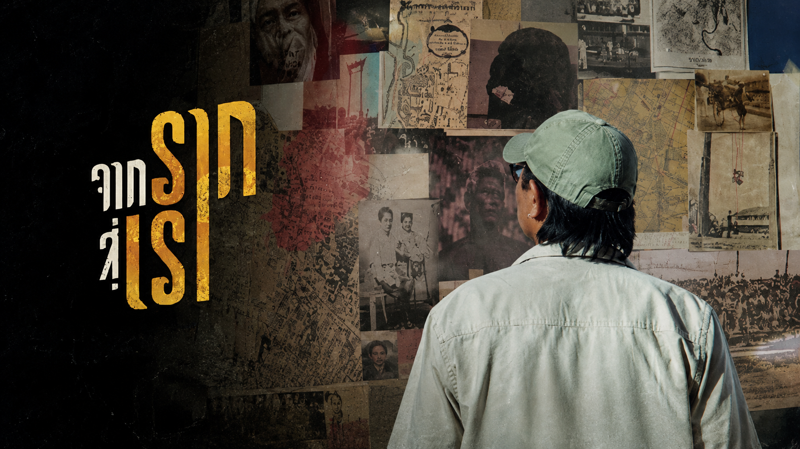
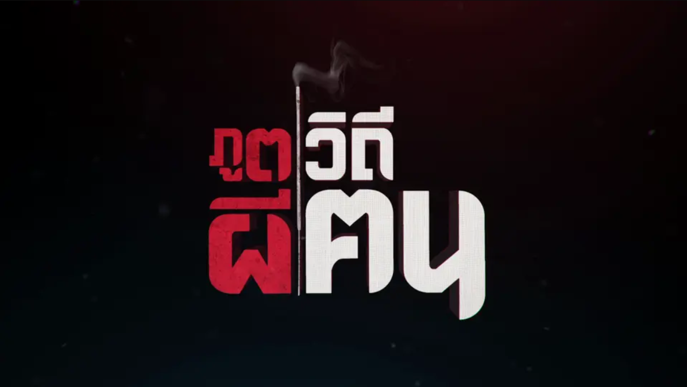
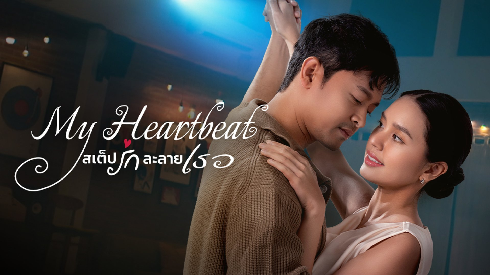

รายการทีวี / สารคดี
จากรากสู่เรา
งานตัดต่อและเกรดสีสารคดี ถ่ายทอดเรื่องราวรากเหง้า วัฒนธรรม และวิถีชีวิตผู้คน

รายการทีวี / สารคดี
ภูตผีวิถีฅน
งานตัดต่อและเกรดสีสารคดี ถ่ายทอดมิติความเชื่อ เรื่องเล่า และคติชาวบ้าน

Series
สูตรรักไม่รู้ลืม (The Recipe of Lasting Love)
สัมผัสรสชาติความคิดถึง บนการเดินทางของความทรงจำและสูตรอาหารไทย

Series
My Heartbeat สเต็ปรักละลายเธอ
เมื่อท่วงท่าพูดแทนเสียงเพลง และหัวใจบรรเลงแทนการได้ยิน

Series
Sweet Sensory เรื่องรัก หลากรส (Season 1 - 2)
การเดินทางของความสุข กับเรื่องราวความผูกพันผ่านรสชาติและการทำอาหาร

Music Video
Music Video Showcase
ตัดต่อสอดคล้องกับจังหวะดนตรี (Beat Matching & Fast Cut)

Color Grading
Cinematic Look (Sony S-Log3)
จัดการ Color Space และเกรดสีโทนภาพยนตร์ด้วย DaVinci Resolve